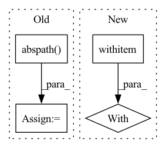

Pattern ID :7162
Before Change
os.mkdir(model_output_path)
model_output_path = os.path.abspath( model_output_path)
model_config.write_config_to_file(model_output_path)
model_config_from_file = \
ModelConfig.create_from_file(model_output_path)After Change
mock_model_config = MockModelConfig()
mock_model_config.start()
// Write the model config to output
with patch ("model_analyzer.triton.model.model_config.open",
mock_open()) as mocked_file:
model_config.write_config_to_file(model_output_path)
content = mocked_file().write.call_args.args[0]
mock_model_config.stop()
In pattern: SUPERPATTERN
Frequency: 3
Non-data size: 4
Instances Fragment ID: 24067119
Project Name: triton-inference-server/model_analyzer
Commit Name: a4a6ea24a86f6d853076a7e524ad96b6ad6ec483
Time: 2021-02-26
Author: itabrizian@nvidia.com
File Name: tests/test_model_config.py
M Class Name: TestModelConfig
N Class Name: TestModelConfig
M Method Name: test_write_config_file(1)
N Method Name: test_write_config_file(1)
M Parent Class: trc.TestResultCollector
N Parent Class: trc.TestResultCollector
M File Name: tests/test_model_config.py
N File Name: tests/test_model_config.py
M Start Line: 99
M End Line: 120
N Start Line: 101
N End Line: 128
Before Change
def get_version():
version_file = osp.join(
osp.abspath( osp.dirname(__file__)) , "nncore", "__init__.py")
lines = open(version_file, "r").readlines()
version_line = [l.strip() for l in lines if l.startswith("__version__")][0]
version = version_line.split("=")[-1].strip().strip(""\"")
return versionAfter Change
def get_version():
version_file = osp.join("nncore", "__init__.py")
with open (version_file, encoding="utf-8") as f:
lines = f.readlines()
version_line = [l.strip() for l in lines if l.startswith("__version__")][0]
version = version_line.split("=")[-1].strip().strip(""\"")
return version Fragment ID: 24067115
Project Name: yeliudev/nncore
Commit Name: 3fcbfd46a41f90f94e9053c58915b8f95459aa34
Time: 2020-03-25
Author: goolhanrry@gmail.com
File Name: setup.py
M Class Name: AnonimousClass
N Class Name: AnonimousClass
M Method Name: get_version(0)
N Method Name: get_version(0)
M Parent Class:
N Parent Class:
M File Name: setup.py
N File Name: setup.py
M Start Line: 9
M End Line: 11
N Start Line: 9
N End Line: 12
Before Change
def start_remote_server(host, local_server_num, identify_file):
ssh_directory = os.path.expanduser("~/.ssh") if identify_file == "" else os.path.dirname(
os.path.abspath( os.path.expanduser(identify_file)) )
ssh = paramiko.SSHClient()
ssh.set_missing_host_key_policy(paramiko.AutoAddPolicy())
private = paramiko.RSAKey.from_private_key_file(
os.path.join(ssh_directory, "id_rsa"))
config = paramiko.config.SSHConfig.from_path(
os.path.join(ssh_directory, "config"))After Change
def start_remote_server(host, local_server_num, identify_file):
with ssh_connect (host, identify_file) as ssh:
sftp = ssh.open_sftp()
sftp.put("/tmp/hetu_ps_config.yml",
"/tmp/hetu_ps_config.yml", confirm=True)
sftp.close() Fragment ID: 24067122
Project Name: hsword/hetu
Commit Name: 31b5486597f4292a32cc2cdb30fa9379c95d08f9
Time: 2021-09-13
Author: 657671989@qq.com
File Name: python/runner.py
M Class Name: AnonimousClass
N Class Name: AnonimousClass
M Method Name: start_remote_server(3)
N Method Name: start_remote_server(3)
M Parent Class:
N Parent Class:
M File Name: python/runner.py
N File Name: python/runner.py
M Start Line: 37
M End Line: 60
N Start Line: 57
N End Line: 71